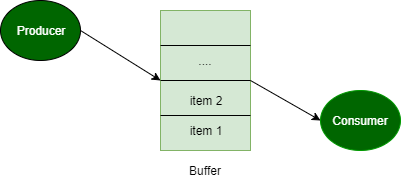

问题：生产者消费者问题（或有界缓冲问题）描述了两个进程，即生产者和使用者，它们共享一个用作队列的通用固定大小缓冲区。 制作人制作一个项目并将其放入缓冲区。 如果缓冲区已满，则生产者必须等待缓冲区中的空块。 消费者从缓冲区消耗一个项目。 如果缓冲区已经为空，那么消费者将不得不等待缓冲区中的项目。 使用共享内存为两个进程实现Peterson的算法，使得它们之间存在互斥。 解决方案应该没有同步问题。

彼得森的算法 -
// code for producer (j)
// producer j is ready
// to produce an item
flag[j] = true;
// but consumer (i) can consume an item
turn = i;
// if consumer is ready to consume an item
// and if its consumer's turn
while (flag[i] == true && turn == i)
{ // then producer will wait }
// otherwise producer will produce
// an item and put it into buffer (critical Section)
// Now, producer is out of critical section
flag[j] = false;
// end of code for producer
//--------------------------------------------------------
// code for consumer i
// consumer i is ready
// to consume an item
flag[i] = true;
// but producer (j) can produce an item
turn = j;
// if producer is ready to produce an item
// and if its producer's turn
while (flag[j] == true && turn == j)
{ // then consumer will wait }
// otherwise consumer will consume
// an item from buffer (critical Section)
// Now, consumer is out of critical section
flag[i] = false;
// end of code for consumer
彼得森算法的解释 -
Peterson的算法用于同步两个进程。 它使用两个变量，一个大小为2的bool数组标志和一个int变量来完成它。
在解决方案中，我代表消费者，j代表生产者。 最初标志是错误的。 当一个进程想要执行它的关键部分时，它将其标志设置为true并转为另一个进程的索引。 这意味着该进程想要执行，但它将允许其他进程首先运行。 该进程执行繁忙等待，直到另一个进程完成它自己的关键部分。
在此之后，当前进程进入其关键部分，并从共享缓冲区中添加或删除随机数。 完成关键部分后，它将自己的标志设置为false，表示它不再希望执行。
该程序在退出前运行一段固定的时间。 可以通过改变宏RT的值来改变该时间。
// C program to implement Peterson’s Algorithm
// for producer-consumer problem.
#include <stdio.h>
#include <stdlib.h>
#include <unistd.h>
#include <time.h>
#include <sys/types.h>
#include <sys/ipc.h>
#include <sys/shm.h>
#include <stdbool.h>
#define _BSD_SOURCE
#include <sys/time.h>
#include <stdio.h>
#define BSIZE 8 // Buffer size
#define PWT 2 // Producer wait time limit
#define CWT 10 // Consumer wait time limit
#define RT 10 // Program run-time in seconds
int shmid1, shmid2, shmid3, shmid4;
key_t k1 = 5491, k2 = 5812, k3 = 4327, k4 = 3213;
bool* SHM1;
int* SHM2;
int* SHM3;
int myrand(int n) // Returns a random number between 1 and n
{
time_t t;
srand((unsigned)time(&t));
return (rand() % n + 1);
}
int main()
{
shmid1 = shmget(k1, sizeof(bool) * 2, IPC_CREAT | 0660); // flag
shmid2 = shmget(k2, sizeof(int) * 1, IPC_CREAT | 0660); // turn
shmid3 = shmget(k3, sizeof(int) * BSIZE, IPC_CREAT | 0660); // buffer
shmid4 = shmget(k4, sizeof(int) * 1, IPC_CREAT | 0660); // time stamp
if (shmid1 < 0 || shmid2 < 0 || shmid3 < 0 || shmid4 < 0) {
perror("Main shmget error: ");
exit(1);
}
SHM3 = (int*)shmat(shmid3, NULL, 0);
int ix = 0;
while (ix < BSIZE) // Initializing buffer
SHM3[ix++] = 0;
struct timeval t;
time_t t1, t2;
gettimeofday(&t, NULL);
t1 = t.tv_sec;
int* state = (int*)shmat(shmid4, NULL, 0);
*state = 1;
int wait_time;
int i = 0; // Consumer
int j = 1; // Producer
if (fork() == 0) // Producer code
{
SHM1 = (bool*)shmat(shmid1, NULL, 0);
SHM2 = (int*)shmat(shmid2, NULL, 0);
SHM3 = (int*)shmat(shmid3, NULL, 0);
if (SHM1 == (bool*)-1 || SHM2 == (int*)-1 || SHM3 == (int*)-1) {
perror("Producer shmat error: ");
exit(1);
}
bool* flag = SHM1;
int* turn = SHM2;
int* buf = SHM3;
int index = 0;
while (*state == 1) {
flag[j] = true;
printf("Producer is ready now.\n\n");
*turn = i;
while (flag[i] == true && *turn == i)
;
// Critical Section Begin
index = 0;
while (index < BSIZE) {
if (buf[index] == 0) {
int tempo = myrand(BSIZE * 3);
printf("Job %d has been produced\n", tempo);
buf[index] = tempo;
break;
}
index++;
}
if (index == BSIZE)
printf("Buffer is full, nothing can be produced!!!\n");
printf("Buffer: ");
index = 0;
while (index < BSIZE)
printf("%d ", buf[index++]);
printf("\n");
// Critical Section End
flag[j] = false;
if (*state == 0)
break;
wait_time = myrand(PWT);
printf("Producer will wait for %d seconds\n\n", wait_time);
sleep(wait_time);
}
exit(0);
}
if (fork() == 0) // Consumer code
{
SHM1 = (bool*)shmat(shmid1, NULL, 0);
SHM2 = (int*)shmat(shmid2, NULL, 0);
SHM3 = (int*)shmat(shmid3, NULL, 0);
if (SHM1 == (bool*)-1 || SHM2 == (int*)-1 || SHM3 == (int*)-1) {
perror("Consumer shmat error:");
exit(1);
}
bool* flag = SHM1;
int* turn = SHM2;
int* buf = SHM3;
int index = 0;
flag[i] = false;
sleep(5);
while (*state == 1) {
flag[i] = true;
printf("Consumer is ready now.\n\n");
*turn = j;
while (flag[j] == true && *turn == j)
;
// Critical Section Begin
if (buf[0] != 0) {
printf("Job %d has been consumed\n", buf[0]);
buf[0] = 0;
index = 1;
while (index < BSIZE) // Shifting remaining jobs forward
{
buf[index - 1] = buf[index];
index++;
}
buf[index - 1] = 0;
} else
printf("Buffer is empty, nothing can be consumed!!!\n");
printf("Buffer: ");
index = 0;
while (index < BSIZE)
printf("%d ", buf[index++]);
printf("\n");
// Critical Section End
flag[i] = false;
if (*state == 0)
break;
wait_time = myrand(CWT);
printf("Consumer will sleep for %d seconds\n\n", wait_time);
sleep(wait_time);
}
exit(0);
}
// Parent process will now for RT seconds before causing child to terminate
while (1) {
gettimeofday(&t, NULL);
t2 = t.tv_sec;
if (t2 - t1 > RT) // Program will exit after RT seconds
{
*state = 0;
break;
}
}
// Waiting for both processes to exit
wait();
wait();
printf("The clock ran out.\n");
return 0;
}
输出：
Producer is ready now. Job 9 has been produced Buffer: 9 0 0 0 0 0 0 0 Producer will wait for 1 seconds Producer is ready now. Job 8 has been produced Buffer: 9 8 0 0 0 0 0 0 Producer will wait for 2 seconds Producer is ready now. Job 13 has been produced Buffer: 9 8 13 0 0 0 0 0 Producer will wait for 1 seconds Producer is ready now. Job 23 has been produced Buffer: 9 8 13 23 0 0 0 0 Producer will wait for 1 seconds Consumer is ready now. Job 9 has been consumed Buffer: 8 13 23 0 0 0 0 0 Consumer will sleep for 9 seconds Producer is ready now. Job 15 has been produced Buffer: 8 13 23 15 0 0 0 0 Producer will wait for 1 seconds Producer is ready now. Job 13 has been produced Buffer: 8 13 23 15 13 0 0 0 Producer will wait for 1 seconds Producer is ready now. Job 11 has been produced Buffer: 8 13 23 15 13 11 0 0 Producer will wait for 1 seconds Producer is ready now. Job 22 has been produced Buffer: 8 13 23 15 13 11 22 0 Producer will wait for 2 seconds Producer is ready now. Job 23 has been produced Buffer: 8 13 23 15 13 11 22 23 Producer will wait for 1 seconds The clock ran out.